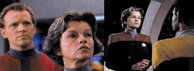
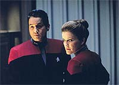
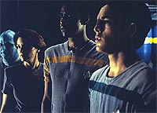
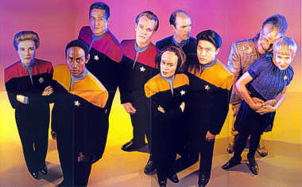

|

Clique aqui
para visitar o
Acervo de colunas


|
Sr. Paris, trace um curso... para casa
 Fonte: Star Trek Communicator Introduo Voyager apareceu nas telas norte-americanas em janeiro de 1995 com a promessa de atingir o mesmo sucesso de A Nova Geração. Aparentemente, nem o estúdio nem Rick Berman estavam dispostos a apostar todas as fichas em Deep Space Nine, que, em seu segundo ano, ainda no tinha se popularizado em larga escala. Assim, aps a estreia, a nova saga procurou resgatar a essncia de Jornada, inclusive com elementos da Série Clássica. Mas o desenvolvimento
do primeiro ano refletiu muito do que se passava nos bastidores,
e esses acontecimentos no eram nada agradveis. O processo
de escalao do elenco, que tinha consumido tempo demais,
atrasou a estreia da série. A atriz canadense Genevive Bujold,
que j havia iniciado as filmagens no papel da capitã Janeway,
voltou atrs e largou o set em plena gravao. A correria
para encontrar uma substituta foi tamanha, que Kate Mulgrew
comeou a filmar dois dias depois de ser contratada. Saiba
mais detalhes clicando aqui. O episódio-piloto foi aceito e muito bem-sucedido em mostrar o potencial do novo spin-off. Apesar de alguns furos no roteiro, conseguiu prender a atenção. No entanto, parece que com tantos problemas por trs da tela, os produtores concentraram todas as suas foras apenas na história inicial. Os segmentos seguintes falharam em resgatar a premissa central, em nada diferenciando-se de roteiros medianos de A Nova Geração. E foi essa a tendncia durante quase toda a temporada. Os episódios da temporada "Caretaker, Parts I & II" (***) procura de uma nave maquis desaparecida, a recm-comissionada USS Voyager, comandada pela capitã Kathryn Janeway, acaba sendo deslocada 70.000 anos-luz por uma entidade misteriosa, indo parar no outro lado da galáxia. Frente hostilidade de uma raa alienígena, as tripulaes das duas naves decidem juntar foras para neutralizar a ameaa. Mas, no processo, acabam destruindo o único meio de voltar instantaneamente para casa: a tecnologia que os transportou para l em primeiro lugar. Unido em uma s equipe depois da destruio da nave maquis, esse grupo de humanos traa um curso para Terra, em viagem que, mesmo em velocidade mxima, deve consumir cerca de 75 anos. "Parallax" (*)  "Time and Again" (***) Enquanto investigam um planeta vtima de catstrofe em escala global, Janeway e Paris atravessam uma fissura subespacial e se vem no mesmo lugar, um dia antes da tragdia. Enquanto a Voyager concentra esforos para encontr-los, a capitã enfrenta o dilema de alertar ou no a populao daquele mundo sobre o que está por vir. Fazendo-o, ela estaria violando o protocolo central da Federao, que probe a interferncia dos oficiais da Frota Estelar no desenvolvimento de espcies menos avanadas. "Phage" (**) A procura de novas fontes de energia para contornar a crise imposta pelas limitaes da Voyager, um grupo avanado liderado por Chakotay se transporta para um planeta rico em diltio bruto. Durante a missão, Neelix atacado e tem alguns rgos internos removidos. Quando a capitã segue a trilha para encontrar os alienígenas, faz uma descoberta aterradora; nessa regio do espao reside uma raa que sobrevive de roubar rgos alheios, por sofrer de uma doena degenerativa incurvel. "The Cloud" (*1/2)
"Eye of the Needle" (***1/2) Sempre investigando possveis meios de levar a nave para casa, o alferes Kim encontra nos sensores de longo alcance uma fenda espacial. Ao chegar s coordenadas, a tripulao descobre que a abertura do portal s tem 30cm de largura. Embora a Voyager no possa atravess-la, essa abertura pode carregar uma mensagem at o outro lado. Quando fica determinado que o outro lado da fenda o quadrante Alfa, todos se animam. O problema aparece quando a nica nave que responde ao chamado romulana. "Ex Post Facto" (**) Em visita ao planeta Banea, Tom Paris acusado de assassinar um renomado cientista. Quando a Voyager decide entrar no sistema para investigar o ocorrido, atacada pelos Numiri, uma raa em guerra com os Baneans. Apesar de todas as evidncias apontarem Paris como o culpado, vem luz uma outra verso dos fatos, algo muito mais sério e de grande repercusso para a populao local. "Emanations" (**1/2) Explorando os anis de um planetide de classificao inédita nos bancos de dados da Federao, a tripulao da Voyager descobre um misterioso stio funerrio. Harry Kim acaba sendo transportado para um mundo, cujos habitantes acham que ele retornou da terra dos mortos. "Prime Factors" (***)
"State of Flux" (**1/2) Guiada por Neelix at um planeta rico em plantas adequadas para alimentao, a Voyager envia para a superfcie vrios grupos avanados de coleta. Na ponte de comando, Tom Paris detecta uma nave camuflada em rbita e, em seguida, descobre que se trata de um cruzador Kazon. Os tripulantes so trazidos de volta, aps um pequeno conflito entre Chakotay e alguns Kazons. Mais tarde, em resposta a um pedido de socorro da mesma nave, Janeway descobre que a causa da exploso que os danificou foi uma tecnologia da Federao. As coisas se complicam quando B'Elanna confirma que o equipamento pertencia Voyager e que provavelmente foi dado ao inimigo por um tripulante. "Heroes and Demons" (***) Uma entidade desconhecida toma o controle do holodeck, aprisionando alguns membros da tripulao. Sem outra alternativa, a capitã pede que o médico hologrfico tente resolver a situao. Agora ele precisa provar aos tripulantes que mais do que um mero pedao de tecnologia e superar as dvidas sobre si mesmo. "Cathexis" (---)
"Faces" (***) Enquando pesquisa um planeta com os tenentes Paris e Durst, B'Elanna seqestrada pelos Vidiians, que tentam extrair o seu DNA Klingon para us-lo na busca por uma cura para a grave doena degenerativa que assola a espcie. Eles a separam em dois indivduos independentes, um humano e o outro Klingon. Enquanto a metade Klingon trancada em um laboratrio para estudos, a outra deixada com Paris e Durst num campo de trabalho forado. Mas para escapar dos Vidiians, as duas B'Elannas precisam se encontrar, trabalhar juntas e superar as desavenas que tm entre si. "Jetrel" (***) Neelix fica horrorizado quando um Haakoniano chamado Ma'Bor Jetrel contata a USS Voyager e pede para conhec-lo. Os Haakonianos lutaram em uma longa e destrutiva guerra contra os Talaxianos. Mas Jetrel diz que veio para examinar Neelix, que segundo o cientista, possui uma doena sangnea fatal, contrada durante o conflito. Mais tarde, Jetrel convence Janeway a visitar o sistema Talaxiano. Usando os sistemas de transporte da nave, Jetrel acha que pode desenvolver uma cura coletando amostras da nuvem de metreon que envolve uma lua local. A complicao surge quando os verdadeiros motivos de Jetrel so revelados. "Learning Curve" (---)  O que promete o DVD Talvez a novidade que mais tenha chamado a atenção dos trekkers foi a incluso das cenas gravadas com a atriz Genevive Bujold. H anos sua performance tem sido objeto de curiosidade e, surpreendentemente, as imagens nunca vazaram no mercado negro ou na internet. A foto no incio do artigo indicativo do que os fs podem esperar... Alm de Bujold como Janeway, os extras do pacote incluem entrevistas com os criadores Rick Berman, Michael Piller e Jeri Taylor (no featurette "Braving The Unknown: Season One"), e com Kate Mulgrew (capitã Janeway), incluindo imagens de bastidores da série, no featurette "Voyager Time Capsule: Kathryn Janeway". Outros extras includos so "Cast Reflections: Season One" (o elenco fala sobre as cartas dos fs, o impacto da franquia em suas vidas e as audies), "On Location with the Kazon" (o produtor David Livingston mostra a regio desrtica usada no episódio-piloto), "Red Alert: Visual Effects Season One" (os segredos por trs dos efeitos especiais), "Launching Voyager on the Web" (o webdesigner e produtor Marc Wade conta como lanou um site nos primrdios da internet para ajudar a divulgar a série), "Real Science with Andre Bormanis" (o consultor e roteirista fala da luta para manter a autenticidade, acrescentando fenmenos espaciais reais e teorias cientficas), e "Lost Transmissions from the Delta Quadrant" (entrevistas adicionais com elenco fixo, produtores e atores convidados). esperar para ver!  Daniel Sasaki co-editor do Trek Brasilis |

 Explorando
uma misteriosa nebulosa que parece ser uma fonte convidativa
de energia, a USS Voyager acaba sofrendo avarias e perdendo
ainda mais as suas reservas. Para sair do fenmeno espacial,
precisa disparar torpedos e romper camadas de matria. S
que durante os reparos, B'Elanna e o Doutor descobrem que
aquela nebulosa no era, na verdade, uma nebulosa, mas uma
forma de vida. Assim, a capitã leva a nave de volta para tentar
reverter os danos causados.
Explorando
uma misteriosa nebulosa que parece ser uma fonte convidativa
de energia, a USS Voyager acaba sofrendo avarias e perdendo
ainda mais as suas reservas. Para sair do fenmeno espacial,
precisa disparar torpedos e romper camadas de matria. S
que durante os reparos, B'Elanna e o Doutor descobrem que
aquela nebulosa no era, na verdade, uma nebulosa, mas uma
forma de vida. Assim, a capitã leva a nave de volta para tentar
reverter os danos causados.
 Quando
uma raa chamada Sikarian, conhecida no quadrante por sua
incrvel hospitalidade, convida a tripulao da Voyager para
uma visita ao seu planeta, a capitã concede licena para seus
oficiais. Na superfcie, Harry Kim descobre que os Sikarians
possuem uma avanada tecnologia de transporte que opera pelo
princpio de espao dobrado. Ao tomar cincia do alcance de
tal tecnologia, cerca de 40.000 anos-luz, o alferes se anima
e a notcia logo se espalha. O dilema surge quando os anfitries
se recusam a compartilhar seu aparato, com base no conjunto
de leis que os regem.
Quando
uma raa chamada Sikarian, conhecida no quadrante por sua
incrvel hospitalidade, convida a tripulao da Voyager para
uma visita ao seu planeta, a capitã concede licena para seus
oficiais. Na superfcie, Harry Kim descobre que os Sikarians
possuem uma avanada tecnologia de transporte que opera pelo
princpio de espao dobrado. Ao tomar cincia do alcance de
tal tecnologia, cerca de 40.000 anos-luz, o alferes se anima
e a notcia logo se espalha. O dilema surge quando os anfitries
se recusam a compartilhar seu aparato, com base no conjunto
de leis que os regem.
 Quando
Chakotay e Tuvok retornam de uma missão em uma nave auxiliar
feridos, a tripulao descobre que uma entidade alienígena
pode ter retornado com eles, medida que estranhos acontecimentos
comeam a ameaar a segurana da Voyager. Saltando de tripulante
em tripulante, as aes desse ser parecem ser confrontadas
pelas de outro. Depois, revela-se que era Chakotay (ou sua
mente, pelo menos) quem estava interferindo nos planos do
alienígena hostil.
Quando
Chakotay e Tuvok retornam de uma missão em uma nave auxiliar
feridos, a tripulao descobre que uma entidade alienígena
pode ter retornado com eles, medida que estranhos acontecimentos
comeam a ameaar a segurana da Voyager. Saltando de tripulante
em tripulante, as aes desse ser parecem ser confrontadas
pelas de outro. Depois, revela-se que era Chakotay (ou sua
mente, pelo menos) quem estava interferindo nos planos do
alienígena hostil.